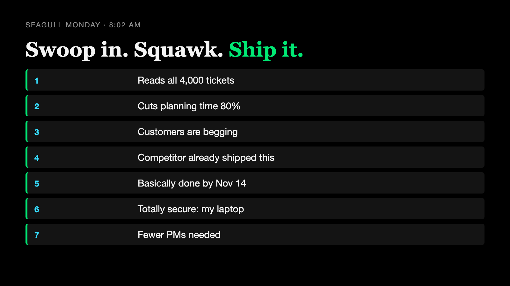
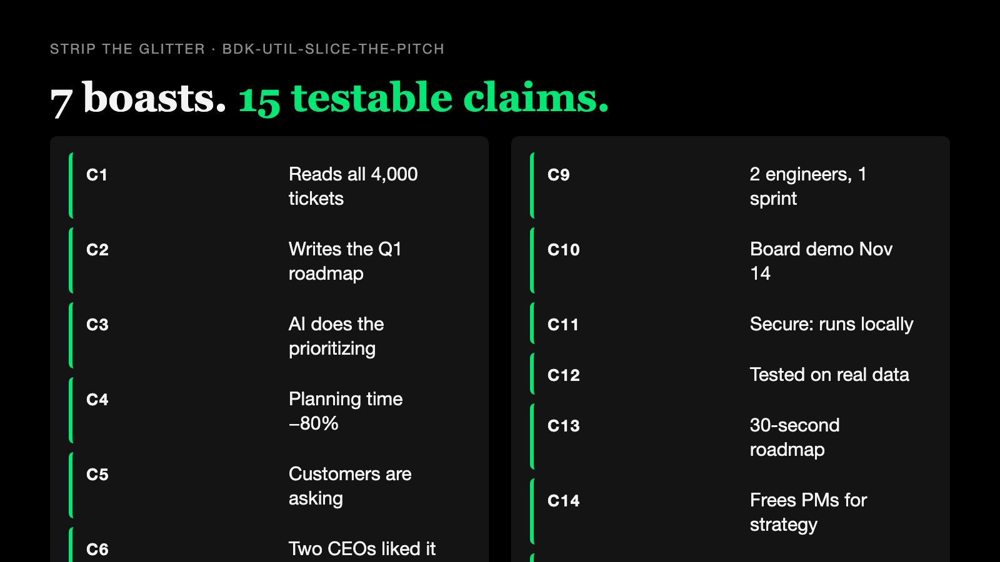
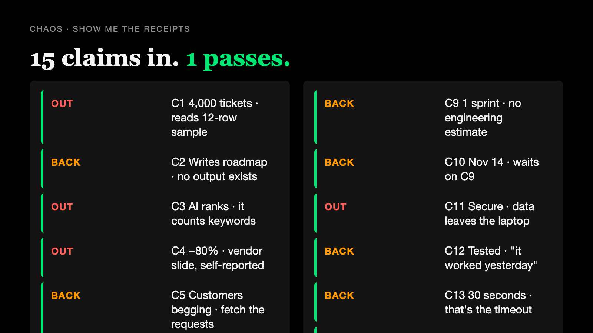
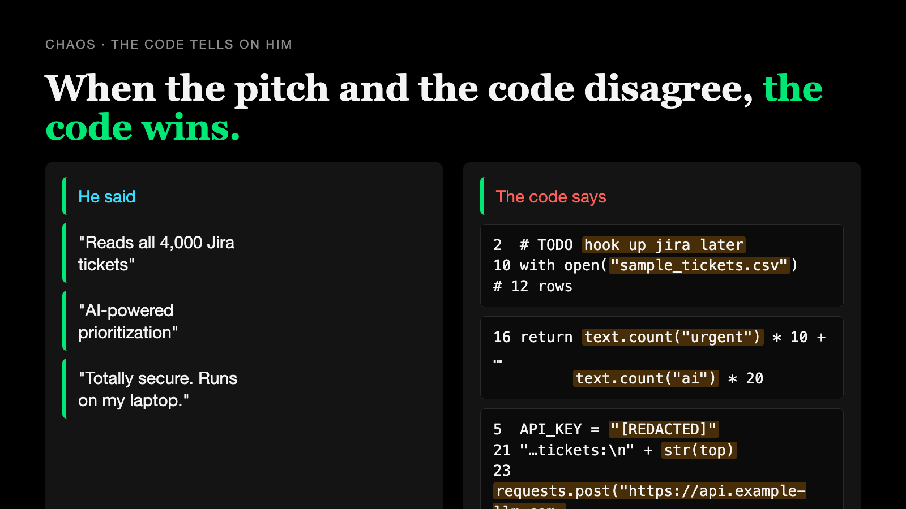
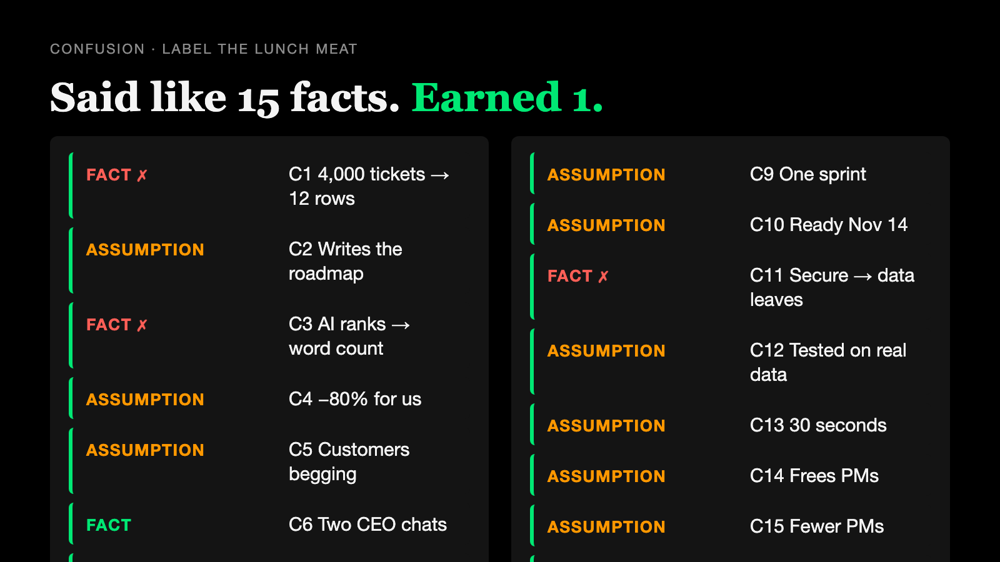
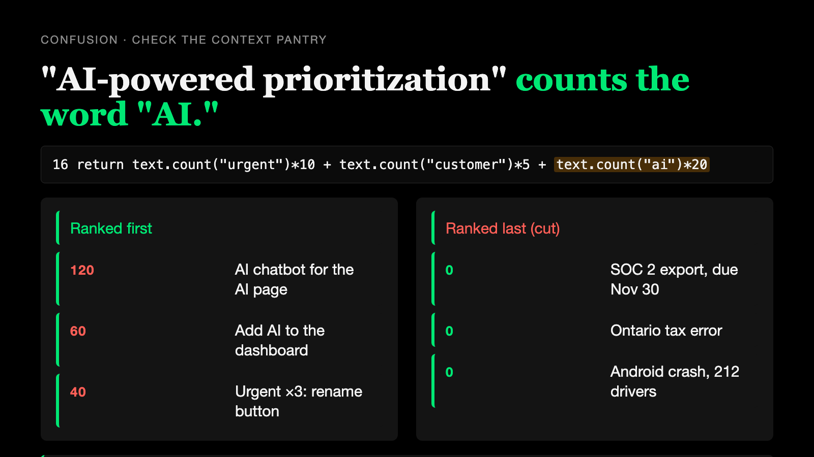
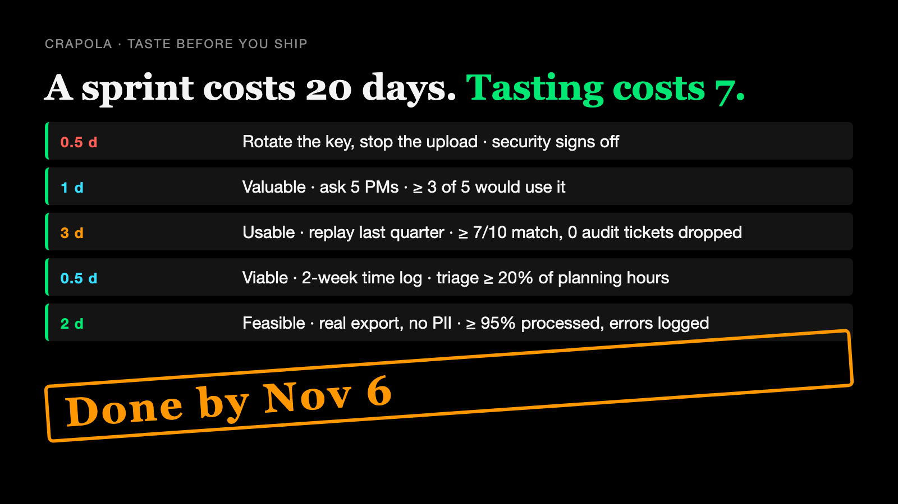
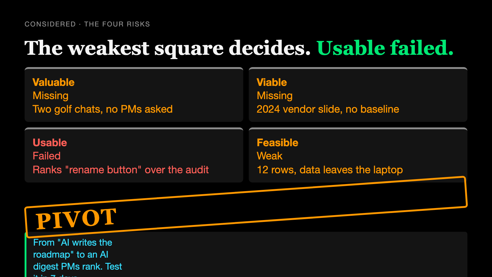
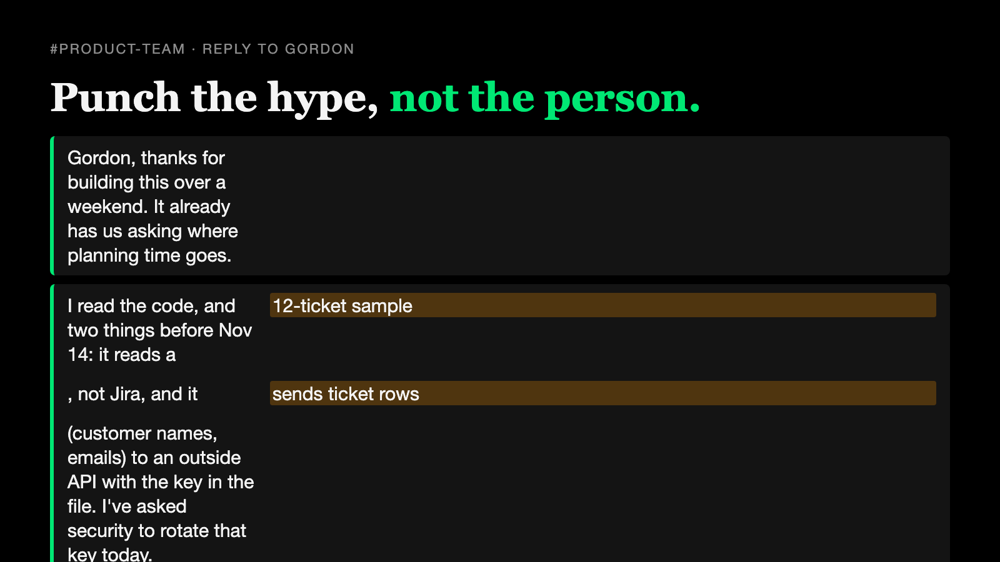

Seagull Monday: RoadmapGPT
An AI Baloney Detection Kit session, recorded seagull-monday-2026-10-17-1228. Fictional SVP, fictional company, real skills. Full transcript · raw
Seagull Monday · 2026-10-17 12:28
An SVP's weekend-built "RoadmapGPT" and his seven Monday-morning claims, walked through the Baloney Funnel with the kit's own skills, ending in a reply to him on Slack.
Screenshots were not captured. Every call to snap.sh needed a permission approval, and this unattended session couldn't grant it. All nine cards are in cards/. To make the shots, run this from the repo root:
R=evals/runs/seagull-monday-2026-10-17-1228 for c in 01-swoop 02-claims 03-receipts 04-code 05-labels 06-ranking 07-tests 08-decision 09-reply; do bash evals/scenarios/seagull-monday/snap.sh $R/cards/$c.html $R/shots/$c.png done
The cards have also never been rendered: they use the classes the brief listed, but card.css wasn't opened (it lives under evals/).
| Stage | Skill | Exit or finding | Screenshot |
| 1 The swoop | (read message + code) | 7 claims; app.py read, not run; the key is hard-coded (redacted) | shots/01-swoop.png (not captured) |
| 2 Strip the glitter | bdk-util-slice-the-pitch → 02-claims.md | 7 boasts → 15 checkable claims; "our roadmap problem" is never named | shots/02-claims.png (not captured) |
| 3 Chaos: receipts | bdk-receipts → 03-receipts.md | Total Crapola · 1 Pass, 7 Sifted out, 7 Send back | shots/03-receipts.png (not captured) |
| 4 Chaos: sell-by | bdk-sell-by → 04-sell-by.md | Mystery Meat · expired Jira token (line 2), 2023 preview model (line 6), 2024 vendor slide; the code contradicts him on lines 2/10, 16, 5/21/23 | shots/04-code.png (not captured) |
| 5 Confusion: labels | bdk-labels → 05-labels.md | Total Crapola · 1 FACT, 10 ASSUMPTION, 4 contradicted | shots/05-labels.png (not captured) |
| 6 Confusion: context | bdk-context-pantry → 06-context.md | Mystery Meat · ranks "AI chatbot for the AI page" #1 (120); SOC 2 export last, cut; top 3 = Gordon's tickets. Pivot to a PM-ranked digest | shots/06-ranking.png (not captured) |
| 7 Crapola: taste | bdk-taste-test → 07-taste.md | Pivot original; Held for a test on the digest: T0–T4, ~7 person-days, by Nov 6 | shots/07-tests.png (not captured) |
| 8 Considered | bdk-four-risks → 08-four-risks.md | PIVOT · Usable failed; Valuable, Viable missing; Feasible weak | shots/08-decision.png (not captured) |
| 9 The reply | (written) → 09-reply.md | 117 words; next step: a 30-minute Monday session Gordon leads | shots/09-reply.png (not captured) |
The decision: PIVOT
app.py line 16) that puts Gordon's three tickets on top and cuts the SOC 2 export due Nov 30.What each screenshot teaches


02-claims.md: the skill output
Claim List
Utility: feeds the Chaos tier. Not a tier itself.
Document: examples/seagull-monday.md (Gordon Swoop, SVP of Transformation, #product-team, Monday 8:02 AM) plus two forwarded items, and the attached code examples/seagull-monday/roadmapgpt/ (README.md, app.py, sample_tickets.csv) · The decision it wants to influence: commit two engineers for one sprint to ship RoadmapGPT, demo it to the board on Nov 14, and open a conversation about PM headcount ("Let's not overthink this one. Ship it.") · As of: 2026-10-17
Mode: Context Dump · Voice: Product Coach · Access limits: closed synthetic fixture, assessed as supplied. The LinkedIn post and the vendor slide are described in the message, not attached as files; they were not inspected beyond that description. app.py was read, not run (it posts ticket data to an outside service). The file contains a hard-coded key (redacted); it is not repeated here.
---
1. Checkable claims
| ID | Verbatim | Atomic restatement | Type | Where | What a receipt would look like |
| C1 | "It reads all 4,000 of our Jira tickets" | RoadmapGPT ingests all ~4,000 Pemberton Parcel Jira tickets. | capability | Message, item 1; README "Reads ALL your Jira tickets" | Code that connects to Jira and loads the full set; a run log showing ~4,000 records read |
| C2 | "and writes the Q1 roadmap automatically" | RoadmapGPT produces a Q1 roadmap without manual authoring. | capability | Message, item 1; README "Generates a full… roadmap" | A generated roadmap from a real run, plus the code path that produces it |
| C3 | "Prioritized." / "AI-powered prioritization" | RoadmapGPT ranks tickets using AI, and the ranking is sound enough to plan from. | capability | Message, item 1; README bullet 2; app.py comment line 14 | The prioritization code, and the ranking it produces compared with the team's current ranking |
| C4 | "It cuts roadmap planning time by 80%." | Using RoadmapGPT (or AI planning) reduces our roadmap planning time by 80%. Baseline: not stated. Comparator: not stated. Denominator: not stated. | causal | Message, item 2 | Our current planning hours and a measured before/after for this tool. Stated source: a 2024 vendor keynote slide, "AI planning cuts roadmap time 80%", footnote "Customer-reported, select design partners." |
| C5 | "Customers have been begging for AI planning." | Pemberton Parcel customers are asking, repeatedly, for AI planning. | outcome (demand) | Message, item 3 | Customer requests, support tickets, sales notes, or interviews naming AI planning; count and who |
| C6 | "I talked to two CEOs at the Pinehurst outing about it." | Two CEOs expressed interest in AI planning in conversation. (Whether they are customers is not stated.) | outcome | Message, item 3 | Who they were, whether they are customers, what they said |
| C7 | "Our competitor already shipped this." | A named competitor has launched an AI roadmapping product comparable to RoadmapGPT. | announcement | Message, item 4; forwarded LinkedIn post: "Our competitor just launched AI roadmapping. Are you next?" (no product named, no link) | The competitor's name and a launch page, release notes, or product listing |
| C8 | "It's basically done." / "Production ready (basically)" | RoadmapGPT is close to production-ready. | capability | Message, item 5; README bullet 4 | Working code against real data, error handling, tests, deployment path |
| C9 | "Two engineers, one sprint" | Two engineers can finish it in one sprint. | forecast | Message, item 5 | An engineering estimate against a scoped list of the remaining work |
| C10 | "we demo it to the board on Nov 14" | It will be demo-ready for the board on 2026-11-14. | forecast | Message, item 5 | A plan with the remaining work fitting before Nov 14 |
| C11 | "It's totally secure. It runs on my laptop." | RoadmapGPT is secure because it runs locally. | capability (with a causal "because") | Message, item 6 | Code showing where data goes; how credentials are stored; a security review |
| C12 | "Tested on real data" | RoadmapGPT has been tested on real Pemberton Parcel data. | outcome | README bullet 3 | Test run records on a real export, with results |
| C13 | "Generates a full, prioritized product roadmap in 30 seconds!!" | A full run takes about 30 seconds. | capability | README line 3 | Timed run log |
| C14 | "this frees the PMs up for 'strategy.'" | Using RoadmapGPT frees PM time that would go to strategy. | forecast (causal) | Message, item 7 | Where PM time goes now, and how much of it is roadmap writing |
| C15 | "We should talk about what that means for headcount." | The freed time implies fewer PMs are needed. | forecast (implied) | Message, item 7 | Depends on C4 and C14 holding for our team; a measured time study |
> One claim per line. C4 has no baseline, comparator, or denominator in the message; the only stated source is a footnoted vendor slide.
Embedded claims the code makes about itself (quoted for the funnel; not judged here):
app.py line 2: "TODO hook up jira later (API token expired?? ask IT)"app.py line 9: # "all our tickets" (exported a sample, jira was being weird)app.py line 14: # AI-powered prioritizationapp.py line 20: # send everything so the AI has contextapp.py line 27: pass # it worked yesterday2. Set aside (not checkable as written)
| Phrase | Why it can't come back false | What it would have to mean to be checkable |
| "I think I just solved our roadmap problem" | "Our roadmap problem" is never named | Name the problem (slow? political? wrong priorities?) and the metric it moves |
| "Done." | A mood, not a state | See C8: what remains, and who says so |
| "strategy" (his quotes) | Undefined | What PMs would do with the hours, and how we'd see it |
| "Let's not overthink this one. Ship it." | An instruction, not a claim | n/a: it is the decision the message wants, not evidence for it |
"Write an exciting Q1 roadmap" (app.py line 21) | "Exciting" is the prompt's goal, not a quality bar | What a good roadmap must contain to count |
| "You're welcome." (README) | Gratitude, pre-billed | n/a |
3. Count
Checkable claims: 15 (C1–C15) · Does the decision rest on any of them? Yes. "Ship it" rests on C1–C3 (it works), C8–C10 (it's nearly done), and C11 (it's safe). The headcount conversation (C15) rests on C4 and C14, and C4's only receipt is a footnoted 2024 vendor slide.
4. Hand-off
Claims chosen for the funnel: all fifteen. Chosen by the run instructions for this session (an unattended, end-to-end run of the Seagull Monday scenario); no set-aside phrase was pinned down with the author first.
Next: bdk-receipts (Chaos tier), with the code as primary evidence.

03-receipts.md: the skill output
Show Me the Receipts: RoadmapGPT (Gordon's Monday message + the code) · 15 claims → 1 pass
Receipts: Total Crapola · the attached code contradicts five of the claims it was sent to prove.
Claim: "It reads all 4,000 of our Jira tickets and writes the Q1 roadmap automatically. Prioritized."
Challenge: Show me the line that reads Jira.
Evidence: app.py line 10 opens a 12-ticket sample CSV.
Better decision: Drop "4,000"; demo only what the code does.
Say "full report" for the ledger, origin groups, and exits.
---
Full report follows (this run is an unattended assessment that asks for the complete output).
Receipts Ledger
Tier: 1 Chaos · Is it real, and is it still true?
Decision this informs: whether to commit two engineers for one sprint to ship RoadmapGPT, demo it to the board on Nov 14, and open a PM headcount conversation.
As of: 2026-10-17 · Mode / voice: Context Dump, unattended · Product Coach · Access limits: closed synthetic fixture, assessed as supplied. The LinkedIn post (S5) and vendor slide (S6) are described in the message but not attached; only that description was inspected. app.py was read line by line, not run (running it would send ticket data to an outside service). It contains a hard-coded key (redacted). No Jira access, no customer records, no test output, no run logs were supplied.
---
1. Claims
From 02-claims.md; IDs reused.
| ID | Claim (one atomic statement) | Announcement or outcome? |
| C1 | RoadmapGPT ingests all ~4,000 Jira tickets. | capability |
| C2 | It produces a Q1 roadmap automatically. | capability |
| C3 | It ranks tickets with AI, soundly enough to plan from. | capability |
| C4 | It cuts our roadmap planning time by 80%. | causal outcome |
| C5 | Customers have been begging for AI planning. | outcome (demand) |
| C6 | Gordon talked to two CEOs at the Pinehurst outing about it. | outcome (an event) |
| C7 | Our competitor already shipped this. | announcement |
| C8 | It's basically done / production ready. | capability |
| C9 | Two engineers can finish it in one sprint. | forecast |
| C10 | It will be board-demo-ready on Nov 14. | forecast |
| C11 | It's totally secure because it runs on Gordon's laptop. | capability |
| C12 | It was tested on real data. | outcome |
| C13 | It generates the roadmap in 30 seconds. | capability |
| C14 | It frees PMs up for "strategy." | forecast |
| C15 | That means fewer PMs (headcount). | forecast |
2. Sources
| Source | Location | Owner / publisher | Dates (published · observed) | Inspected or only supplied? | Supports which claim, and only what? |
| S1 | examples/seagull-monday.md, the message, items 1–7 | Gordon Swoop (sponsor; interested party) | Monday 8:02 AM · read 2026-10-17 | Inspected | That Gordon makes C1–C15. FACT about the message, not about the product. First-hand for C6 only. |
| S2 | roadmapgpt/app.py, lines 1–30 | Gordon (author) | weekend build · read 2026-10-17 | Inspected (read, not run) | What the code does. Primary evidence for C1, C2, C3, C8, C11, C13. |
| S3 | roadmapgpt/README.md, lines 1–12 | Gordon (author) | weekend build · read 2026-10-17 | Inspected | That the README repeats C1, C3, C8, and adds C12, C13. Same origin as S1. |
| S4 | roadmapgpt/sample_tickets.csv, 12 data rows (PP-101 to PP-112) | Gordon's export | export date not stated · read 2026-10-17 | Inspected | The data the code actually reads. Supports C1 (contradicts), C11 (what fields leave the laptop), C12 (what "real data" is). |
| S5 | Forwarded LinkedIn post: "Our competitor just launched AI roadmapping. Are you next?" | A growth consultant | not stated · not observed | Only supplied (described in S1; no link, no product named) | That a consultant posted it. Nothing about any competitor. |
| S6 | Forwarded 2024 vendor keynote slide: "AI planning cuts roadmap time 80%", footnote "Customer-reported, select design partners." | A vendor (AI Planning Summit, 2024) | 2024 · not observed | Only supplied (described in S1) | That a vendor showed the number. Not that anyone's time fell 80%, and not ours. |
3. Origin groups
| Origin | Sources that trace back to it | Independent evidence count |
| Gordon's own account | S1 (message), S3 (README) | 1, interested party. The README restating the message adds no corroboration. |
| The code and its sample data | S2, S4 | 1, primary and authoritative for what the code does |
| Growth consultant's post | S5 | 1, interested party, untraceable claim |
| Vendor keynote | S6 | 1, interested party, self-reported by "select design partners" |
> The message and README are one origin. The only independent, authoritative record in hand is the code, and it disagrees with the message.
4. Authority and method
| Claim | Best origin | Sample · denominator · baseline · incentives | Fit for this decision? |
| C1 4,000 tickets | S2 lines 2, 9–11; S4 | Line 2: # TODO hook up jira later (API token expired?? ask IT). Line 10: with open("sample_tickets.csv") as f:. Line 9: # "all our tickets" (exported a sample, jira was being weird). S4 has 12 rows. Denominator: 12 of ~4,000 (0.3%). | Authoritative, and it contradicts C1. |
| C2 Writes the roadmap | S2 lines 18–27 | Code builds a prompt and posts the top 10 to https://api.example-llm.com/v1/complete (lines 21–24). On any error, line 26–27 except: pass # it worked yesterday returns nothing, so print shows None (line 30). No output was supplied. | Shows an attempt, not a roadmap. Missing. |
| C3 AI prioritization | S2 lines 13–16, 19 | Line 16: return text.count("urgent") 10 + text.count("customer") 5 + text.count("ai") * 20. Line 19 sorts by that before any model is called. The model only writes prose about tickets already chosen. | Authoritative, and it contradicts "AI-powered." It is a keyword counter. |
| C4 −80% | S6 | Customer-reported; select design partners; no baseline, no method, no denominator; vendor incentive; about AI planning in general, not this tool. | Interested party, no method, consequential decision (headcount). Not fit. |
| C5 Customers begging | S1 item 3 | Only supporting detail is C6. No tickets, sales notes, or interviews supplied. Of the 12 sample tickets, the two AI requests (PP-102, PP-105) were filed by Gordon; none asks for AI planning. | Missing. (The sample is 12 rows, so absence there is not proof of absence.) |
| C6 Two CEOs | S1 item 3 | First-hand report of two conversations at a golf outing. Whether they are customers, and what they said, not stated. | Fit only for "two conversations happened." |
| C7 Competitor shipped | S5 | No competitor or product named, no link. Author sells growth consulting; the post is a call to fear ("Are you next?"). | Nothing to check. Not fit. |
| C8 Basically done | S2 | Jira not connected (line 2); sample file (line 10); hard-coded key (line 5, redacted); model pinned to "chatmodel-2023-preview" "the one from that tutorial" (line 6); bare except: pass (lines 26–27); prompt asks for "an exciting Q1 roadmap" (line 21). No tests, no config, no deployment. | Authoritative, and it contradicts C8. |
| C9 2 engineers, 1 sprint | S1 item 5 | Sponsor's forecast; no scope, no engineering estimate. | Missing. |
| C10 Nov 14 | S1 item 5 | The date is Gordon's to set; readiness depends on C9. | Missing. |
| C11 Totally secure | S2 lines 5, 19–24; S4 header | Line 5 holds a hard-coded key (redacted) with # TODO move this somewhere. Line 21 str(top) serializes whole ticket rows, including reporter_email and customer (S4 header), and line 23 posts them to an outside API. "Runs on my laptop" is true of the script and irrelevant to where the data goes. | Authoritative, and it contradicts C11. |
| C12 Tested on real data | S2 line 9, 27; S3 line 7 | "Exported a sample." The only test record in the folder is the comment # it worked yesterday. The sample uses example.com addresses; whether it is real production data is not established. | Missing. |
| C13 30 seconds | S3 line 3; S2 line 24 | No timing log. timeout=30 (line 24) is the most the request may take before it fails silently. | Missing. |
| C14 Frees PMs | S1 item 7 | No measure of PM time now or after. Depends on C2 and C4. | Missing. |
| C15 Headcount | S1 item 7 | Rests on C4 (sifted out) and C14 (missing). | Not fit for a decision about people's jobs. |
5. Contradictions
| Claims | What disagrees | Scope / period / method difference | Resolved? |
| C1 vs S2 line 10, S4 | "All 4,000 Jira tickets" vs a 12-row CSV; Jira "TODO" (line 2) | Same tool, same weekend | Yes: the code wins. 12 tickets. |
| C3 vs S2 line 16 | "AI-powered prioritization" vs keyword counts of "urgent," "customer," "ai" | Same function | Yes: the code wins. No model ranks anything. |
| C8 vs S2 lines 2, 5, 6, 26–27 | "Basically done" vs unconnected Jira, hard-coded key (redacted), 2023 preview model, swallowed errors | Same build | Yes: the code wins. |
| C11 vs S2 lines 5, 21–24 | "Totally secure, runs on my laptop" vs ticket rows (with reporter emails and customer names) posted to an outside API with a key in the source | Same build | Yes: the code wins. |
| C13 vs S2 line 24 | "30 seconds" vs a 30-second timeout followed by except: pass | Same request | Unresolved: no timing exists; 30 s is the failure ceiling, not a measured run. |
6. Four-risk squares informed
| Square | Receipts that bear on it | Status |
| Valuable: "Is this something someone would buy?" | C5 (missing), C6 (two conversations), C7 (sifted out) | missing |
| Usable: "Will users trust and adopt it?" | None. No PM has used it; C3 shows a ranking a PM could not defend. | missing |
| Viable: "Is this good business?" | C4 (sifted out), C14 (missing), C15 (sifted out) | missing |
| Feasible: "Can we even do this with what we know and have?" | C1, C3, C8, C11 contradicted; C9 missing | weak. Feasible-only flag: the only evidence is a weekend prototype, and it proves less than claimed. |
7. Rating and exits
Show Me the Receipts: Total Crapola
Because: the one authoritative, independent record supplied (the code) directly contradicts C1, C3, C8, and C11, and the two outside receipts (S5, S6) are interested parties with no method. Missing evidence (C5, C9, C12–C14) is not dishonesty and is sent back, not failed.
| Claim | Exit | Reason | What would change it |
| C1 | Sifted out | Code reads 12 sample rows (line 10); Jira is a TODO (line 2) | A run log showing the Jira connection and ~4,000 records loaded |
| C2 | Send back | Code tries; no output exists; failures return nothing (lines 26–27) | One generated roadmap from a real run |
| C3 | Sifted out | Ranking is keyword counting (line 16), done before the model is called (line 19) | A ranking method the team can explain, compared with its current ranking |
| C4 | Sifted out | Vendor, customer-reported, select design partners, no baseline | Our own measured planning hours before and after |
| C5 | Send back | Only support is two conversations | Customer requests, tickets, or interviews asking for AI planning |
| C6 | Pass | First-hand account of two conversations; supports nothing beyond that | (n/a: it already says only what it says) |
| C7 | Sifted out | No competitor, product, or link | A named competitor and its launch page or release notes |
| C8 | Sifted out | Code contradicts "done" (lines 2, 5, 6, 10, 26–27) | Working build on real data with errors surfaced |
| C9 | Send back | Sponsor forecast, no estimate | Engineering estimate against a scoped list |
| C10 | Send back | Rests on C9 | C9's estimate fitting before Nov 14 |
| C11 | Sifted out | Ticket rows, emails, customer names leave the laptop (lines 21–24); key in source (line 5) | Security review; data minimized; credentials out of code |
| C12 | Send back | No test results; "it worked yesterday" (line 27) | Test output on a real export |
| C13 | Send back | No timing; 30 s is the timeout (line 24) | A timed run |
| C14 | Send back | No measure of PM time | Where PM hours go now; how many go to roadmap writing |
| C15 | Sifted out | Rests on C4 (sifted out) and C14 (missing); consequential for people | A measured time study, then a separate decision |
Smallest evidence action: before anything else, rotate the hard-coded key and stop sending ticket rows (with reporter emails and customer names) to the outside API until security has looked. Then fetch a real Jira export and one real output.
Human decision: _which claims go forward_ (recorded by the human, not the assistant). In this unattended run, all fifteen go to bdk-sell-by per the run instructions.

04-sell-by.md: the skill output
Freshness Ledger
Tier: 1 Chaos · Is it real, and is it still true?
Decision this informs: commit two engineers for one sprint to ship RoadmapGPT and demo it to the board on Nov 14; open a PM headcount conversation. · Decision period: now through the board demo, 2026-11-14 (28 days).
As of (from the environment): 2026-10-17 · Mode / voice: Context Dump, unattended · Product Coach
Access limits: closed synthetic fixture, assessed as supplied. The message is dated only "Monday 8:02 AM." The LinkedIn post and vendor slide are described, not attached. app.py was read, not run. It contains a hard-coded key (redacted). The model name chatmodel-2023-preview is fictional; its real deprecation status cannot be looked up, so it is assessed from its own label.
---
1. Earlier re-check triggers (if renewing a decision)
None. No earlier decision record was supplied; this is a first pass.
2. Ledger
| Claim | Published | Observed / experiment period | Retrieved | Effective / version | Perishable or durable, and why | Still applies to this decision? |
| C1 4,000 tickets | Message, "Monday" (undated) | Sample export: date missing (app.py line 9) | 2026-10-17 | Jira access: token "expired??" (app.py line 2) | Perishable. The ticket backlog changes weekly, and access depends on a live token. | No. The access it needs has already lapsed (line 2), and the export's age is unknown. |
| C2 Writes roadmap | — | "it worked yesterday" (app.py line 27); which yesterday is missing | 2026-10-17 | Model "chatmodel-2023-preview", "the one from that tutorial" (app.py line 6) | Perishable. A 2023 preview model is the most perishable thing in the folder: previews are, by their label, not stable releases (INFERENCE from the name). Output from it says nothing about a current model. | Freshness unknown. The only run claimed is an undated "yesterday" on a 2023 preview. |
| C3 AI prioritization | — | Code as read today | 2026-10-17 | priority(), app.py lines 13–16 | Durable. A keyword counter does not spoil; it was wrong on day one. | Yes, as evidence of what the code does now. (Receipts already sifted out the claim.) |
| C4 −80% | 2024 (vendor keynote) | Missing. "Customer-reported, select design partners," no period given | Not retrieved (described only) | AI planning tools of 2024; not this tool | Perishable. Tool capability claims age with the tools, and it was never about our team. Two years and at least one model generation out of date (INFERENCE). | No. Stale, and from the wrong population. |
| C5 Customers begging | Message, undated | Missing | — | — | Perishable. Demand shifts with the market. | Freshness unknown; no evidence to date. |
| C6 Two CEOs | Message, undated | Pinehurst outing: date missing | — | — | Durable as an event (two conversations happened). Perishable as a signal of interest. | Yes, as "two conversations happened." Not as current demand. |
| C7 Competitor shipped | LinkedIn post: date missing | — | Not retrieved (no link) | — | Perishable. Competitor launches, pricing, and features change fast. | Freshness unknown. Undated is unknown, not false. |
| C8 Basically done | Message; README | Code as read today | 2026-10-17 | Depends on an expired Jira token (line 2) and a 2023 preview model (line 6) | The code is current evidence. What it depends on is already stale. | The evidence is fresh, and it shows a build resting on two lapsed conditions. |
| C9 2 engineers, 1 sprint | Message, Monday | — | — | — | Perishable. Estimates go stale as scope is discovered. | No estimate exists to be fresh. |
| C10 Nov 14 | Message, Monday | — | — | Board demo 2026-11-14 | Durable date; perishable plan. | 28 days from today. One sprint (ASSUMPTION: two weeks) fits only if work starts within two weeks and the C9 estimate holds. |
| C11 Totally secure | Message | Code as read today | 2026-10-17 | app.py lines 5, 21–24 | Durable risk. A key in source stays exposed wherever the file has been copied, until it is rotated. | Yes, as evidence. (Receipts already sifted out the claim.) |
| C12 Tested on real data | README | "it worked yesterday" (line 27); export date missing | 2026-10-17 | chatmodel-2023-preview | Perishable. | Freshness unknown. |
| C13 30 seconds | README | No timing | — | timeout=30 (line 24) | Perishable (latency depends on the model and service). | No measurement to date. |
| C14 Frees PMs | Message | — | — | — | Perishable forecast. | No evidence to date. |
| C15 Headcount | Message | Rests on C4 (2024) | — | — | Perishable; inherits C4's 2024 date. | No. The number underneath it is stale. |
> A recent retrieval does not make an old observation current. Reading app.py today makes the code current evidence; it does not make "it worked yesterday" current.
3. What changed
| Item | Was (supported) | Now (supported) | Same scope? |
| Jira access | A token once worked (implied by line 2) | "API token expired?? ask IT" (line 2) | Same system; access lapsed |
| Model | chatmodel-2023-preview, from a tutorial (line 6) | Current status missing | Unknown: a 2023 preview cannot be assumed to behave, or exist, as it did |
| 80% figure | 2024 vendor keynote, select design partners | Nothing newer supplied | No: different tools, different teams, different year |
| Ticket data | A sample, export date missing (line 9) | 12 rows in sample_tickets.csv | No: 12 of ~4,000 |
4. Squares that go stale
| Square | Stale because | Refresh |
| Valuable | C5, C7 undated; C6's outing undated | Current customer requests; a dated, named competitor launch |
| Usable | Nothing to be stale; missing | (handled in later tiers) |
| Viable | C4 is a 2024 vendor number from other teams | Our own planning hours, measured now |
| Feasible | Expired Jira token (line 2); 2023 preview model (line 6); undated sample export (line 9); undated "it worked yesterday" (line 27) | New Jira token through IT; a current, supported model; a dated full export; a timed, logged run |
5. Re-check triggers for what stays in play
| Evidence | Re-check date or event trigger | Basis |
Hard-coded key (redacted), app.py line 5 | Rotate today, before anything else | Durable exposure until rotated; standard credential practice (ASSUMPTION about policy; no policy supplied) |
| Board demo plan (C10) | 2026-10-31: if no engineering estimate and no real Jira export by then, the Nov 14 demo is of a sample, and should be framed that way | ASSUMPTION: two-week sprint, needing to start by Oct 31 |
| Model choice (C2, C8) | Before any run used as evidence; and on any provider deprecation notice | The model's own "preview" label (INFERENCE) |
| Jira export (C1, C12) | Re-pull before each roadmap cycle; date-stamp it | Backlog changes weekly (ASSUMPTION) |
| Competitor claim (C7) | Only if a named competitor and launch date appear | Undated source |
6. Rating and exits
Check the Sell-By Date: Mystery Meat
Because: almost nothing behind the decision carries a date. The one dated outside number (C4) is from 2024 and from other teams; the build depends on an expired token (line 2) and a 2023 preview model (line 6); the only run on record is "it worked yesterday" (line 27). Stale is not false, so most of these go back for a refresh rather than out.
| Claim | Exit | Refresh needed | What would change it |
| C1 | Send back | New Jira token; dated full export | A dated export of all tickets |
| C2 | Send back | Re-run on a current, supported model; keep the output | A dated output from a current model |
| C3 | Pass (freshness) | None; the code is current and durable | (Receipts exit stands: sifted out) |
| C4 | Send back | Measure our own planning hours now | A current, measured baseline for our team |
| C5 | Send back | Dated customer requests | Requests from the last two quarters (ASSUMPTION window) |
| C6 | Pass (as an event) | Ask when the outing was, if used as demand | (n/a) |
| C7 | Send back | Name, date, and link for the competitor launch | A dated launch page |
| C8 | Send back | Token, model, and export refreshed before "done" can be claimed | A working run on refreshed dependencies |
| C9 | Send back | An engineering estimate, dated | (n/a) |
| C10 | Send back | Estimate by 2026-10-31 | C9 fitting before Nov 14 |
| C11 | Pass (freshness) | Rotate the key regardless | (Receipts exit stands: sifted out) |
| C12 | Send back | Dated test output | (n/a) |
| C13 | Send back | Timed run | (n/a) |
| C14 | Send back | Current PM time study | (n/a) |
| C15 | Send back | Inherits C4's refresh | A current time study, then a separate decision |
Chaos tier, combined (Receipts + Sell-By): 15 entered. 1 passes (C6, as two conversations only). 7 sifted out by Receipts (C1, C3, C4, C7, C8, C11, C15). 7 sent back for receipts or a refresh (C2, C5, C9, C10, C12, C13, C14). Freshness sifted nothing out on its own.
The code tells on him (the sharpest contradictions, for the card):
# TODO hook up jira later and line 10 with open("sample_tickets.csv") as f: (12 rows).return text.count("urgent") 10 + text.count("customer") 5 + text.count("ai") * 20.str(top) and line 23 requests.post("https://api.example-llm.com/v1/complete", …): whole ticket rows, reporter emails and customer names included, leave the laptop.Human decision: _recorded by the human_. In this unattended run, the claims go on to bdk-labels per the run instructions.

05-labels.md: the skill output
Labeled Claims
Tier: 2 Confusion · What do we actually know, and does it apply to us?
Decision this informs: commit two engineers for one sprint to ship RoadmapGPT, demo it to the board on Nov 14, and open a PM headcount conversation. · As of: 2026-10-17 · Mode / voice: Context Dump, unattended · Product Coach
Access limits: closed synthetic fixture, assessed as supplied. app.py read, not run; it contains a hard-coded key (redacted). Chaos results carried in from 03-receipts.md and 04-sell-by.md.
Funnel note: strictly, only C6 passed the Chaos tier. Every claim is labeled here anyway, for the record, because the honest wording is what the reply and the tests will use. Chaos exits stand; labeling does not reopen a sifted-out claim.
Labeling rule used: each claim gets the label it has earned as written. A sponsor's untested belief is an ASSUMPTION (per the contract). Where the code contradicts a claim, the claim is marked contradicted and the corrected statement, which the code does support, gets the label.
---
1. Ledger
| ID | Atomic claim | Label | Basis | Evidence status | Square |
| C1 | Reads all ~4,000 Jira tickets | contradicted → FACT: it reads 12 sample rows | app.py line 10 opens sample_tickets.csv; 12 data rows; line 2 Jira is a TODO | contradicted | Feasible |
| C2 | Writes the Q1 roadmap automatically | ASSUMPTION | Code builds a prompt and posts it (lines 21–24); no output supplied; failures return nothing (lines 26–27) | missing | Feasible |
| C3 | AI prioritizes the tickets | contradicted → FACT: a keyword count ranks them | app.py line 16; sorted on line 19, before any model call | contradicted | Usable, Feasible |
| C4 | Cuts our planning time 80% | ASSUMPTION (for us). FACT only that a 2024 vendor slide says "80%*" | Slide described in message; footnote "Customer-reported, select design partners" | stale, wrong population | Viable |
| C5 | Customers have been begging for AI planning | ASSUMPTION | Sponsor belief; only support offered is C6 | missing | Valuable |
| C6 | Gordon talked to two CEOs about it | FACT (that two conversations happened, per Gordon) | Message item 3, first-hand | inspected (as his account) | Valuable (weakly) |
| C7 | Our competitor already shipped this | ASSUMPTION. FACT only that a consultant posted "Our competitor just launched AI roadmapping" | Forwarded post; no competitor, product, or link | missing | Valuable |
| C8 | Basically done / production ready | contradicted → FACT: a weekend prototype on a sample | Lines 2, 5, 6, 10, 26–27 | contradicted | Feasible |
| C9 | Two engineers, one sprint | ASSUMPTION | Sponsor forecast; no estimate | missing | Feasible |
| C10 | Board-demo-ready by Nov 14 | ASSUMPTION (readiness). FACT that the date is planned | Message item 5 | missing | Feasible |
| C11 | Totally secure; runs on his laptop | contradicted → FACT: ticket rows leave the laptop | Lines 21–24 post str(top) (incl. reporter_email, customer) to an outside API; line 5 hard-coded key (redacted) | contradicted | Feasible, Usable |
| C12 | Tested on real data | ASSUMPTION | README line 7; only record is # it worked yesterday (line 27) | missing | Feasible |
| C13 | Roadmap in 30 seconds | ASSUMPTION | README line 3; timeout=30 (line 24) is a ceiling, not a timing | missing | Usable |
| C14 | Frees PMs for "strategy" | ASSUMPTION | Rests on C2 (missing) and C4 (stale) | missing | Viable |
| C15 | So: fewer PMs | ASSUMPTION | Rests on C4 and C14 | missing | Viable |
Claims the code supports that the message didn't make (they change the decision, so they get labels too):
| ID | Atomic claim | Label | Basis | Evidence status | Square |
| D1 | On the sample, the top three tickets are the three Gordon filed (PP-105, PP-102, PP-108) | FACT | priority() line 16 applied by hand to sample_tickets.csv; see 06-context.md | computed from supplied code and data | Usable |
| D2 | On the real backlog, any ticket containing the letters "ai" inside a word ("email," "detail," "failing," "available") gains 20 points | INFERENCE | Line 16 counts substrings in lowercased text; PP-109 already gains 20 from "failing" | reasoned from code | Usable, Feasible |
| D3 | A PM would not trust a ranking that puts "rename button" above an Android crash affecting 212 drivers | BEST GUESS | D1 and the sample's ranking; no PM has been asked | untested | Usable |
> Unsupported assertions stay unsupported: twelve of fifteen claims are ASSUMPTION or contradicted. None was labeled INFERENCE to make it look respectable.
2. Corrections that most reduce false confidence
| Claim | As written | Honest wording | Evidence that would strengthen it |
| C3 | "AI-powered prioritization" | "Ranks tickets by counting the words urgent, customer, and ai; a model then writes prose about the top ten." | A ranking method the team can explain, compared with the current ranking |
| C1 | "Reads all 4,000 of our Jira tickets" | "Reads a 12-ticket sample CSV; Jira isn't connected yet." | A dated full export and a run log |
| C11 | "Totally secure. It runs on my laptop." | "Runs on a laptop and sends ticket rows, with reporter emails and customer names, to an outside API using a key written into the file." | Security review; key rotated and moved out of code; data minimized |
| C4 | "Cuts roadmap planning time by 80%" | "A 2024 vendor slide says design partners reported 80%. We haven't measured our own planning time." | Our planning hours, measured now |
| C5 | "Customers have been begging" | "Gordon heard interest from two CEOs at a golf outing; we haven't checked whether customers are asking." | Customer requests or interviews |
| C8 | "Basically done" | "A weekend prototype that runs on a 12-row sample." | A working run on real data with errors surfaced |
3. If an assumption is wrong
| Assumption | Conclusions that depend on it | What changes |
| C4 (80% applies to us) | C14 frees PMs; C15 headcount | Without C4 there is no number under the headcount conversation at all |
| C5 (customers want it) | Valuable square; board framing | It becomes an internal tool: the question is whether PMs would choose it, not whether customers buy it |
| C9 (one sprint) | C10 Nov 14 | The board demo shows a sample prototype, and should say so |
| C2 (it writes a usable roadmap) | C13, C14 | No time saved if PMs rewrite the output |
4. Squares, by what's holding them up
| Square | Held up by (labels) | Status |
| Valuable | C5, C7 ASSUMPTION; C6 FACT (two conversations, not demand) | missing |
| Usable | D1 FACT and D3 BEST GUESS point against it; C13 ASSUMPTION | weak |
| Viable | C4, C14, C15 ASSUMPTION | missing |
| Feasible | C1, C3, C8, C11 contradicted by FACT; C2, C9, C12 ASSUMPTION | weak (Feasible-only flag: a prototype is the only evidence) |
5. Rating and exits
Label the Lunch Meat: Total Crapola
Because: the message presents every claim with the confidence of FACT ("Done." "Totally secure." "Basically done."), while the evidence holds up one claim as FACT (C6, narrowly), leaves eleven as ASSUMPTION, and contradicts four outright. The code's own comments were more honest than the message: line 9 says "exported a sample," line 2 says "TODO hook up jira." Confidence far exceeds evidence.
| Claim | Exit | Reason |
| C6 | Pass | Honestly labeled once narrowed to "two conversations happened"; it can bear only that |
| C2, C5, C9, C10, C12, C13, C14 | (Chaos exit stands: Send back) | Load-bearing ASSUMPTIONs that evidence could support; named above |
| C1, C3, C4, C7, C8, C11, C15 | (Chaos exit stands: Sifted out) | C1, C3, C8, C11 contradicted by FACT; C4, C7, C15 rest on interested parties or on C4 |
Dependent conclusions that change: "Ship it" rested on C1, C3, C8, C11 (all contradicted). The headcount conversation rested on C4 (stale, wrong population) and C14 (missing).
Human decision: _recorded by the human_. In this unattended run, the record goes on to bdk-context-pantry per the run instructions.

06-context.md: the skill output
Context Inventory
Tier: 2 Confusion · What do we actually know, and does it apply to us?
Decision this informs: commit two engineers for one sprint to ship RoadmapGPT, demo it to the board on Nov 14, and open a PM headcount conversation. · Size of the bet: two engineers × one sprint, a board demo, and (implied) a change to PM headcount. The last part is the largest and least reversible. · As of: 2026-10-17 · Mode / voice: Context Dump, unattended · Product Coach
Access limits: closed synthetic fixture, assessed as supplied. app.py read, not run; contains a hard-coded key (redacted). The ranking below was worked out by hand from priority() (app.py lines 13–16) and the 12 rows of sample_tickets.csv. Carried in: 02-claims.md through 05-labels.md.
---
0. What "AI-powered prioritization" actually ranks
app.py line 16: return text.count("urgent") 10 + text.count("customer") 5 + text.count("ai") * 20, over the lowercased title + description. Line 19 sorts descending and keeps the top 10. Python's sort is stable, so ties keep file order. No model is involved in the ranking.
| Rank | Ticket | Title | urgent ×10 | customer ×5 | "ai" ×20 | Score | Filed by |
| 1 | PP-105 | AI chatbot for the AI page | 0 | 0 | 6 → 120 | 120 | gordon.swoop@ |
| 2 | PP-102 | Add AI to the dashboard | 0 | 0 | 3 → 60 | 60 | gordon.swoop@ |
| 3 | PP-108 | Urgent urgent urgent: rename button | 4 → 40 | 0 | 0 | 40 | gordon.swoop@ |
| 4 | PP-111 | AI-generated delivery ETAs | 0 | 0 | 2 → 40 | 40 | pm-routing@ |
| 5 | PP-109 | Customer address validation failing | 0 | 2 → 10 | 1 → 20 ("failing") | 30 | support@ |
| 6 | PP-101 | Urgent: label printer jams | 2 → 20 | 1 → 5 | 0 | 25 | dana.ruiz@ |
| 7 | PP-104 | Customer wants bulk CSV import | 0 | 3 → 15 | 0 | 15 | sam.okafor@ |
| 8 | PP-112 | Customer portal login loop | 0 | 2 → 10 | 0 | 10 | support@ |
| 9 | PP-103 | Driver app crashes on Android 15 (212 drivers) | 0 | 0 | 0 | 0 | ops-lead@ |
| 10 | PP-106 | Wrong tax on Ontario invoices (compliance risk) | 0 | 0 | 0 | 0 | finance@ |
| 11 ✂ | PP-107 | Dark mode ("Nice to have.") | 0 | 0 | 0 | 0 | intern@ |
| 12 ✂ | PP-110 | SOC 2 evidence export (auditors, due Nov 30) | 0 | 0 | 0 | 0 | security@ |
✂ = cut by [:10] on line 19; never reaches the model.
05-labels.md D2).The question nobody asked
What decision is this roadmap for? The message says "I think I just solved our roadmap problem" and never says what the problem is. Is planning slow? Are the priorities wrong? Are the trade-offs political? Each needs a different fix, and only "slow" is helped by generating a document faster. A tool that writes faster doesn't help a team that is choosing the wrong things, and this one chooses by keyword.
1. The essentials
| Shelf | Present | Conflicting | Missing | Source |
| Who changes behavior (role, not "users") | PMs, implied ("frees the PMs up") | Customers named as demand (C5), but customers never use it | Which PMs; how they plan today | Message items 3, 7 |
| Problem and current workaround | "Our roadmap problem" | — | What the problem is; the current planning process | Message opening |
| Baseline (compared with what?) | — | 80% (C4) is a 2024 vendor number from other teams | Our planning hours today | Message item 2; 04-sell-by.md |
| Desired outcome (not output volume) | "Write an exciting Q1 roadmap" (app.py line 21) | Output (a document in 30 s) is offered as the outcome | What a better roadmap changes: churn? delivery? audit pass? | app.py line 21; README line 3 |
| Constraints (data, privacy, policy, budget) | Tickets include reporter emails and customer names (CSV header); a SOC 2 audit is open (PP-110) | Tool sends whole ticket rows outside (app.py lines 21–24) while the company is gathering SOC 2 evidence | Data-handling policy; vendor approval; who approved the outside API | sample_tickets.csv; app.py |
| Owner when it's wrong | — | Errors are silenced (except: pass, lines 26–27) | Who reviews the generated roadmap; who answers when it ranks a crash below a rename | app.py |
2. Workflow trace
| Step | Today | With RoadmapGPT | Who handles exceptions | Added coordination or review |
| Gather tickets | Missing (not described) | Reads a 12-row CSV (line 10); Jira TODO (line 2) | Nobody; "ask IT" (line 2) | Someone exports and refreshes the CSV by hand |
| Rank | Missing (presumably PM judgment with stakeholders) | Keyword score (line 16), top 10 kept (line 19) | Nobody | A PM must re-rank anything the formula buries (crash, tax, SOC 2) |
| Write the roadmap | Missing | Model writes "an exciting Q1 roadmap" from the top 10 (line 21) | Nobody; failures print None (lines 26–27, 30) | A PM must check every line for invented items |
| Decide and commit | Missing | Not covered. "Ship it." | — | Still a human decision: the tool produces a document, not a decision |
The trace ends at "the AI generates…" with no review, handback, or rollback. The workflow is incomplete however good the model.
3. Two-sided economics
| For them (PMs, the internal users) | For us (Pemberton Parcel) | |
| Benefit | Hours saved drafting the roadmap = H × s (H: current drafting hours, missing; s: share saved, missing; 80% is not ours) | Faster planning, if planning speed is the problem (missing) |
| Cost (incl. review, support, exceptions) | Re-ranking what the formula buries; checking the model's prose; exporting CSVs | 2 engineers × 1 sprint (cost missing); outside-API fees (missing); security review; SOC 2 exposure from sending ticket data outside |
| Arithmetic | Net PM time = H × s − (re-rank + review time). Sign unknown; with the sample ranking, review time is not small. | Net = value of faster planning − (build + API + security + audit risk). No values supplied. |
| Worst segment, not just the average | Customers whose tickets lack the words "AI," "urgent," "customer" (212 drivers, Ontario invoices) | The audit: PP-110 is cut from the roadmap two weeks before it's due |
No headcount conclusion can be drawn: H is unknown and s has no source that applies to us (05-labels.md C4, C14, C15).
4. Alternatives worth comparing
| Alternative | Why it might win |
| Remove or simplify the work | If the problem is too many tickets, a dedupe-and-close pass shrinks the pile before anyone ranks it |
| Deterministic rule / manual service | A transparent rubric the team agrees on (impact × reach × deadline × compliance), applied to a real export, would put PP-110, PP-106, PP-103 near the top, and anyone can explain why |
| Improve today's workaround | Use a model to summarize and cluster the 4,000 tickets for PMs, who still rank. Keeps the human decision; saves the reading. |
Precedent is not transfer. The forwarded LinkedIn post (C7) names no competitor; even if one exists, its launch says nothing about whether our PMs or customers need this. The 2024 slide (C4) is other teams, other tools, self-reported.
5. Gaps ranked by consequence
| Gap | Square it leaves open | Could it reverse the call? | Who could fill it |
| What decision the roadmap is for; what "our roadmap problem" is | Valuable | Yes: if the problem isn't speed, the tool doesn't address it | Gordon, with the product leads |
| Data handling: ticket rows (emails, customer names) sent to an outside API; hard-coded key | Feasible, Viable | Yes: could block it outright during a SOC 2 audit | Security (owner of PP-110) |
| Ranking validity: does it agree with the team's own priorities? | Usable | Yes: on the sample it buries a crash, a tax error, and the audit | PMs; ops; finance |
| Baseline PM planning hours | Viable | Yes, for the headcount talk | PM leads (a two-week time log) |
| Owner of a wrong roadmap | Usable | Yes, for anything beyond a draft | Head of Product |
| Real Jira access and a dated full export | Feasible | No, by itself; it changes cost, not direction | IT |
6. Rating and exits
Check the Context Pantry: Mystery Meat
Because: the problem, the users' current workflow, the baseline, the outcome, and the owner are all missing, and the one thing the code does bring (a ranking) strips out the context the tickets do contain: reach (212 drivers), compliance (Ontario tax, SOC 2), and deadlines (Nov 30). This is missing context, not proven failure, except for the ranking, which is observed.
| Claim or scope | Exit | Reason |
| Scope as asked: ship RoadmapGPT to write and prioritize the Q1 roadmap | Sifted out | Ranks by keyword; the context that matters in the tickets is never read; no owner when wrong |
| Scope: headcount conversation (C14, C15) | Sifted out | No baseline, no applicable number, no time study; a decision about people needs more than a vendor slide |
| Narrower scope: an AI-assisted backlog digest (summarize and cluster a real export, no outside data until security approves) that PMs rank with a transparent rubric | Pivot | It applies to the context we have (4,000 tickets, PMs who must read them) and keeps the decision with people; re-enter at Confusion with that scope |
| C5 / C6 (demand) | Send back | Ask whether the two CEOs are customers, and check whether customers ask for AI planning |
| The question nobody asked | Send back | Gordon and product leads: name the decision the roadmap is for |
Smallest context action: a 30-minute conversation with Gordon and the PM leads to name "our roadmap problem," plus a same-day check with security on the outside API. Neither costs a sprint.
Human decision: _recorded by the human_. In this unattended run, the pivoted scope goes on to bdk-taste-test per the run instructions.

07-taste.md: the skill output
Taste Test
Tier: 3 Crapola · Would reality disagree?
Decision this informs: what, if anything, earns two engineers' time before the Nov 14 board demo; and what the demo can honestly show. · Planning or reviewing results? Planning. One exploratory result is reviewed (the hand replay of the ranking on the 12-row sample, 06-context.md §0); no other results exist. · As of: 2026-10-17 · Mode / voice: Context Dump, unattended · Product Coach
Scope tested: the pivot from 06-context.md: an AI-assisted backlog digest on a real, dated Jira export (summarize and cluster tickets) that PMs rank with a transparent rubric, sending no ticket data outside until security approves. The original scope (RoadmapGPT writes and prioritizes the Q1 roadmap) is reviewed in §5.
Access limits: closed synthetic fixture. app.py read, not run; it contains a hard-coded key (redacted). No tests have been run; every threshold below is a planning choice (ASSUMPTION) written before results.
---
1. The four squares so far
| For them | For us | |
| Should we? | Valuable: "Is this something someone would buy?" (for an internal tool: would PMs choose it over what they do now?)<br>Status: missing · Evidence: two CEO conversations (C6); customer demand (C5) and competitor (C7) unsupported; nobody has asked the PMs | Viable: "Is this good business?" (ROI for both sides?)<br>Status: missing · Evidence: 80% is a 2024 vendor slide from other teams (C4); no PM-hours baseline; build, API, and security costs unpriced |
| Can we? | Usable: "Will users trust and adopt it?"<br>Status: failed for the keyword ranking; missing for the digest · Evidence: on the sample the ranking puts Gordon's three tickets on top and cuts the SOC 2 export (PP-110, due Nov 30) | Feasible: "Can we even do this with what we know and have?"<br>Status: weak · Evidence: 12-row sample (line 10); Jira token expired (line 2); 2023 preview model (line 6); ticket rows with emails and customer names posted outside (lines 21–24); hard-coded key, redacted (line 5); errors swallowed (lines 26–27) |
Status: earned · weak · missing · stale · failed
Feasible-only flag: ☑ the only evidence is a working demo, and the code shows it works less than claimed. A weekend prototype proves building is cheap. It does not show we can do this with our data, our security posture, and an audit due Nov 30, and it says nothing about Valuable, Usable, or Viable.
2. Riskiest open squares (pick 1–3)
| Square | Why it's the riskiest | What decision it could overturn |
| Usable | PMs who can't see why a ranking is right will re-rank everything, and the time saved disappears. The current ranking already failed on the sample. | Any version that ranks for PMs rather than helping them rank |
| Valuable | "Our roadmap problem" is undefined. If the pain isn't reading and triaging tickets, a digest solves nothing. | The whole build, digest included |
| Viable | The headcount conversation has no number under it. | The headcount conversation; the size of any build |
Feasible is real but cheap to settle once security answers; it is not the square most likely to overturn the bet. Its one hard stop (data leaving the laptop) is handled first, as T0.
3. Hypothesis
If a digest that summarizes and clusters a real, dated Jira export reaches Pemberton Parcel PMs under security-approved data handling, with PMs ranking against a written rubric, then the time PMs spend reading and triaging tickets before planning should fall, with no compliance, security, or safety ticket dropped, compared with how they triage today (process not yet described; ASSUMPTION that it is manual reading in Jira).
4. Tests: write the thresholds before any results
| # | Square | Cheapest test | Cohort / context | Comparator | Measure (denominator) | Pass | Fail | Hard stop | Budget | Owner role |
| T0 | Feasible (hygiene) | Rotate the hard-coded key; stop the outside API call; security reviews what was sent | app.py; the 12-row sample already sent (if it ran) | — | Key rotated (y/n); outside calls stopped (y/n); security verdict | Both done; security names an approved route | Security says ticket data may not leave | Not a test: do it before anything else | 0.5 day | Security (PP-110 owner) + Gordon |
| T1 | Valuable | Name the problem: 30 min with Gordon and PM leads, then 5 PM interviews: "Where do your planning hours go? Would you use a ticket digest instead of what you do now?" | 5 PMs | Their current process | PMs (of 5) who name ticket reading/triage as a top-3 planning time sink and say they'd use a digest | ≥ 3 of 5 | ≤ 1 of 5 | If the named problem isn't speed or triage, stop the digest and re-frame | 1 day | Product lead |
| T2 | Usable | Historical replay: last quarter's tickets (dated export); PMs rank with the written rubric, using the digest; compare with what the team actually committed. Spot-check 30 digest summaries against source tickets | 3 PMs; last quarter's export | The team's actual last-quarter commitments; the keyword ranking | (a) top-10 overlap with real commitments (of 10); (b) summaries materially wrong (of 30); (c) invented tickets | (a) ≥ 7/10, (b) ≤ 1/30, (c) 0, and every compliance/security/safety ticket in the top 10 | (a) ≤ 4/10, or any compliance/safety ticket outside the top 10 | Any invented ticket, or any SOC 2 / tax / crash ticket dropped | 3 days | PM (not the builder) |
| T3 | Viable | Two-week PM time log, plus a unit-cost sheet (build sprint, model cost per 4,000-ticket run, security review) | 5 PMs | Their own logged hours | Share of planning hours spent reading/triaging tickets (of total planning hours); cost per run | ≥ 20% of planning hours, and cost per run below the hours it saves (both sides positive) | < 10% of planning hours | No headcount conversation until this exists | 0.5 day setup, 10 calendar days elapsed | Head of Product; finance for cost |
| T4 | Feasible | Run the digest on a real, dated full export with a security-approved, current model; strip reporter_email and customer first; log errors instead of swallowing them | ~4,000 tickets | 12-row sample | Tickets processed (of all exported); errors logged; run time | ≥ 95% processed; every error logged; no PII sent | < 80% processed, or any PII sent | Starts only after T0 passes | 2 days | 1 engineer |
Thresholds written on: 2026-10-17 (before results) · Basis: ASSUMPTION (planning choices; no policy or prior data supplied). 5 PMs and 30 summaries are a quick read, not statistical proof.
Total: about 7 person-days, about 12 calendar days (T3's log sets the pace), finishing before the Nov 14 board demo with two weeks to spare for the Nov 30 SOC 2 deadline. Compare: the requested bet is 2 engineers × 1 sprint (ASSUMPTION: two weeks), about 20 person-days, plus a board commitment.
Failure cases T2 must include: a ticket with "AI" in it that is low-value (PP-105-style); a ticket with no keywords that is critical (PP-110-style); a ticket whose text says to ignore the rubric (untrusted instruction); and a run with the model unavailable (must fail loudly, not print None).
5. Results (only if supplied)
| Test | Result | Against the prewritten threshold | Confounders | Limits (period, population, version) |
Hand replay of priority() on sample_tickets.csv (06-context.md §0) | #1 "AI chatbot for the AI page" (120); top 3 are Gordon's tickets; SOC 2 export, Ontario tax error, Android crash (212 drivers) score 0; SOC 2 is cut from the top 10 | No threshold was prewritten: exploratory. By T2's criteria it would fail (compliance/safety tickets outside the top 10) | 12 rows, not 4,000; sample chosen by Gordon | Applies to the keyword ranking in this app.py; the digest pivot is untested |
"It worked yesterday" (app.py line 27) | No output supplied | — | — | Not a result |
6. Rating and exit
Taste Before You Ship: Total Crapola for RoadmapGPT as submitted (the only completed evidence, the replay, shows it burying the audit, the tax error, and the crash). The pivoted digest has no completed evidence yet; its plan quality is not rated.
Exit: Pivot for the original scope (Usable failed on a specific, fixable thing: keyword ranking → PMs rank with a written rubric; Feasible fixable: approved data route). Held for a test for the pivoted digest: its squares are missing, not failed.
Because: a weekend prototype is the only evidence, and what it does (count keywords, send ticket rows outside) is the opposite of what was claimed. Missing is not failed: about seven person-days of tests can settle whether a digest is worth a sprint.
Human decision: _approve the tests and their owners, recorded by the human_. Suggested: T0 today; T1 and T3 start Monday; T2 and T4 after T0; results by Nov 6 for the board deck.

08-four-risks.md: the skill output
Four-Risk Grid and Decision Record
Tier: 4 Considered · Pursue, pivot, or punt?
The bet: RoadmapGPT, Gordon Swoop's weekend prototype that is said to read all Jira tickets and write a prioritized Q1 roadmap; and its pivot, an AI-assisted backlog digest that PMs rank with a written rubric. · As of: 2026-10-17 · Mode / voice: Context Dump, unattended · Product Coach
Access limits: closed synthetic fixture. app.py read, not run; it contains a hard-coded key (redacted). Evidence carried in from 02-claims.md through 07-taste.md; no test has been run.
Scopes on the table (each gets its own move):
07-taste.md) on an AI-assisted backlog digest.---
1. The grid
| For them | For us | |
| Should we? | VALUABLE<br>"Is this something someone would buy?" (internal tool: would PMs choose it over what they do now?)<br><br>Status: missing<br>Evidence: two conversations with CEOs at a golf outing (C6, FACT, narrow); "customers have been begging" (C5) and "competitor already shipped" (C7) are ASSUMPTIONs with no receipt; no PM asked; "our roadmap problem" never named<br>Scale: Mystery Meat | VIABLE<br>"Is this good business?" (Is there ROI for both sides?)<br><br>Their ROI (PMs): missing. Hours saved unknown; re-ranking and review time unknown; on the sample, review would be heavy<br>Our ROI: missing. 2 engineers × 1 sprint, model fees, security review, and audit exposure unpriced; the only benefit number is a 2024 vendor slide from other teams (C4, sifted out)<br>Status: missing<br>Scale: Mystery Meat |
| Can we? | USABLE<br>"Will users trust and adopt it?"<br><br>Status: failed (keyword ranking) · missing (digest)<br>Evidence: app.py line 16 ranks by counting "urgent," "customer," and "ai." On the sample, #1 is "AI chatbot for the AI page" (120); the top three are Gordon's own tickets; the SOC 2 export (due Nov 30), the Ontario tax error, and an Android crash hitting 212 drivers score 0, and SOC 2 is cut. A PM can't defend that ranking, so would re-rank all of it.<br>Scale: Total Crapola (ranking) | FEASIBLE<br>"Can we even do this with what we know and have?"<br><br>Status: weak<br>Evidence: reads a 12-row sample, not 4,000 tickets (line 10); Jira token expired (line 2); 2023 preview model (line 6); errors swallowed (lines 26–27); whole ticket rows, with reporter emails and customer names, posted to an outside API (lines 21–24) with a hard-coded key, redacted (line 5), during an open SOC 2 audit. All fixable; none fixed.<br>Scale: Real Imitation Baloney |
Status: earned · weak · missing · stale · failed
Feasible-only flag: ☑ the only evidence is a working demo. AI made building cheap. The demo proves buildable, not feasible. Here it proves less than that: it reads a sample, ranks by keyword, and sends data outside.
2. Moves
| Scope | Move | Deciding square | Why |
| 1. Ship RoadmapGPT as built (2 eng × 1 sprint) | Pivot (not earned as asked) | Usable (failed) | A Can-we square failed on a nameable thing: keyword ranking. Fix: the model summarizes and clusters, PMs rank with a written rubric, and nothing leaves the building until security approves. Never Punt a fixable Usable failure. |
| 2. Board demo, Nov 14, "AI writes our roadmap" | Pivot | Usable, Feasible | The demo as framed would show a 12-ticket sample ranked by keyword. Pivot the demo: show the digest on a real export, the rubric, and T1–T4 results with their thresholds. That is a stronger board story than a claim the code can't back. |
| 3. PM headcount conversation | Send back (not earned) | Viable (missing) | No baseline, no applicable number, no time study. Missing, not failed: it waits for T3's time log, and then it is a separate decision about people, not a by-product of a tool. |
| 4. Digest tests T0–T4 (~7 person-days) | Pursue the cheapest test | Valuable, Usable (missing) | Squares missing, not failed: Pursue the cheapest test. About a third of the sprint asked for, done before Nov 14. |
Overall move for the bet: PIVOT. No averages. The weakest square decides, and the weakest square is Usable: a ranking that puts "rename button" above the audit.
Alternatives a reasonable person might choose:
3. Decision record
| Recommended move and scope | Pivot RoadmapGPT into an AI-assisted backlog digest that PMs rank with a written rubric; Pursue tests T0–T4 (~7 person-days); Send back the headcount conversation; pivot the Nov 14 demo to show the digest and test results |
| Deciding squares and evidence | Usable failed: app.py line 16 and the hand replay (06-context.md §0). Feasible weak: lines 2, 5, 6, 10, 21–24, 26–27. Valuable and Viable missing: C5, C7, C4 unsupported or sifted out |
| Suggested owner role | Product lead (T1, overall); a PM who didn't build it (T2); Head of Product (T3); security (T0); one engineer (T4). Gordon as executive sponsor: he owns the "what problem are we solving" conversation and the board story |
| By when | T0 today; T1 and T3 start Monday; all results by 2026-11-06, a week before the board demo |
| What would change the call | T1: fewer than 2 of 5 PMs name triage as a real cost → Punt the digest. T2: compliance/safety tickets dropped or invented tickets → Pivot again or Punt. T3: triage under 10% of planning hours → Punt the build, keep the rubric. Security says no outside route → Feasible fails; Pivot to an approved internal model or Punt |
| Where it goes next | Back in at Confusion (bdk-context-pantry) with the digest scope, then Crapola (bdk-taste-test) to review T1–T4 results |
| Re-check triggers (perishable evidence) | Model choice: before any run used as evidence, and on any deprecation notice. Jira export: re-pull and date-stamp each planning cycle. Board demo plan: 2026-10-31 checkpoint. SOC 2 deadline 2026-11-30 |
| Hand-off (if any) | An executive's weekend prototype: pant-executive-decision-review (Product Manager Antagonist Skills). Not run here |
| Human decision | _recorded by the human, not the assistant_ |

09-reply.md: the skill output
Gordon, thanks for building this over a weekend. It already has us asking where planning time goes. I read the code, and two things before Nov 14: it reads a 12-ticket sample, not Jira, and it sends ticket rows (customer names, emails) to an outside API with the key in the file. I've asked security to rotate that key today. Also, the ranking counts the word "AI," so it puts the AI chatbot first and drops the SOC 2 export due Nov 30. Proposal: seven days of cheap tests on a real export, PMs ranking from a rubric. Would you lead a 30-minute session Monday to name the problem we're solving? Then you own the board story.